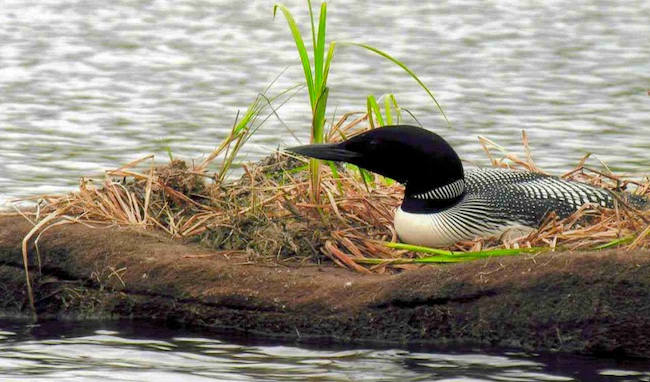

Water Quality
- Floating treatment wetlands reduce suspended solids by adsorbing floating sediment in the water column to the biofilm that grows on the island.
- Floating treatment wetlands revitalize the food web by opening up autotrophic and heterotrophic gateways for nutrients, such as nitrates and phosphates, to be absorbed from the water and accumulated into plant/animal biomass. This allows nutrients to flow through the ecosystem more quickly, ultimately reducing nutrient buildup and increasing the efficiency of the overall natural aquatic system.
Habitat Management
- If utilized properly, Floating treatment wetlands have the ability to support an abundance of life, from avian to aquatic. Floating treatment wetlands provide a floating surface that can thrive in any aquatic habitat, and has been used to bring birds and fish back by providing stable nesting/breeding grounds.
- In addition, floating treatment wetlands are theorized to balance water temperatures; absorbing sunlight during the day and being a heat source during the night.

Wetland/Lake Restoration
- Floating treatment wetlands are a great way to balance and revitalize an aquatic ecosystem by optimizing an environment for a base level food source to grow rapidly. This can allow for proper food web growth and boosts an ecosystems efficiency for transforming energy and nutrients.
Wetland/Lake Restoration
- Floating treatment wetlands are a great way to balance and revitalize an aquatic ecosystem by optimizing an environment for a base level food source to grow rapidly. This can allow for proper food web growth and boosts an ecosystems efficiency for transforming energy and nutrients.

Structure Lifestyle and Beautification
- Floating treatment wetlands have the potential to turn into gorgeous floating islands providing a beautiful and functional habitat that improve the aesthetics of the area.
Species Control
- Floating treatment wetlands can be used to control pesky insects such as mosquitos by growing fathead minnows from the biofilm that grows on floating treatment wetlands. Fathead minnows consume roughly 500-700 mosquito larvae a day.
Aquatic Odor Reducer
- As the biofilm grows throughout the floating treatment wetlands it will create a source of nutrients for small aquatic critters (such as minnows) to feed on. This provides an effective way for decomposing organic material to be used, instead of it building up to create an ammonia rich environment that causes ponds to become smelly.